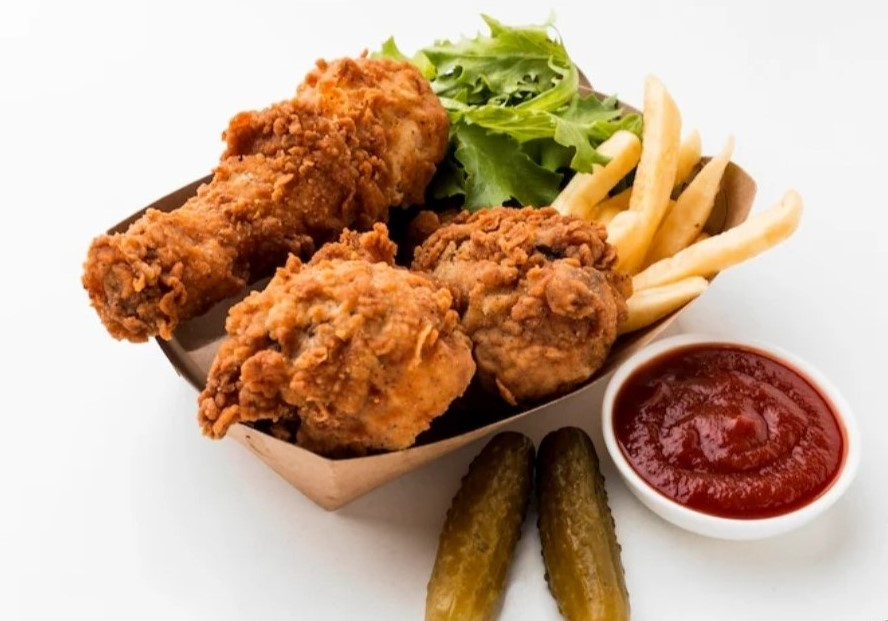

POULET PANE ET FRITES
Ingredients
- 500g d'aguillettes de poulet
- 2 oeufs
- 4 cuilliere a soupe de farine
- 4 cuillière à soupe de chapelure
- 250g de pomme de terre
- huil de friture
- quelque poivre et du sel
- Huile de tournesol

Préparation et cuisson
1ère étape: preparation du poulet
- Marinage du poulet
Mettre les morceaux de poulet dans un plats creux ensuite ajouter du sel, du poivre
selon votre préference.Laissez mariner 1heures au frais En retournant régulièrement les morceaux
- Preparation de la panure
Mettre la farine dans une asiette puis batter les oeufs et l'huile de tournesol
dans une assiette creuse
melanger la chapelure avec le sel et le poivre dans une troisième assiette
- Panage du poulet
Séchez les morceaux de poulet avec du papier absorbant
Passez-les dans la farine,
puis dans l'oeuf et enfin dans la chapelure.
- Cuisson du poulet pané
- Faite chauffer l'huile de friture dans une friteuse ou dans une poele
- Plongez-y les morceaux de poulet par petite quantité et laiisez les frires pendant 15minutes
- Egouttez les morceaux de poluet pané dans du papier absorbant ,reservez au chaud
2ème étape:preparation des frites
Préparation
- Découpage
Epulchez les pomme de terre et coupez-les en batonnet
- Trempage
Plongez les dans l'eau froide pendant 30minutes pour rétirer l'amidon pour qu'ils ne collent pas
Double cuisson
- Premier bain
Pendant 5-8min à 150°C pour cuire à l'intérieur sans colorer. Puis egouttez
- Second bain
juste avant de servir, 2-3min à180°C doré et le croustillant